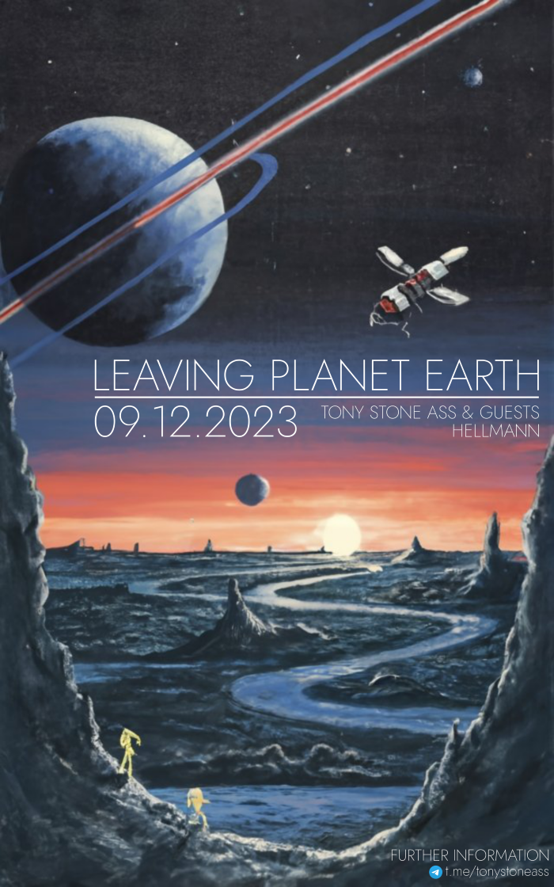

Facebook
Internet Archive - all TSA releases
Youtube
Email
Telegram
NEWS

MANIFEST
Tony Stone Ass (TSA) improvisieren seit 2006 Klangreisen aus psychedelisch-rockigen und sonstigen akustischen Elementen.
Die Klänge entstehen in der Intensität des Augenblicks und verklingen in der subjektiven Ewigkeit. Ein Echo im Grand Canyon des Gehörgangs. Die Lust am Improvisieren und das Vertrauen in die Musik, bilden das Handgepäck für die Reise ins Ungewisse. Im Mittelpunkt steht dosierte Risikolust im Kontext akustischer Selbstwirksamkeit.
TSA sind wie eine Pizza Margherita. Eine stimmige Komposition aus den Zutaten Gitarre, Synthesizer, Bass, Schlagzeug. - Nach Lust und Laune wird der fluffige Klangfladen durch Inspirationsspritzen – in Form von Gastmusizierenden - verfeinert.
TSA gibt es auch als Snack im Hosentaschenformat. Intuitiv-produktiv veröffentlichen wir regelmäßig neue Reiseführer (Internet Archive).
TSA wünschen sich stimmige Resonanzräume, in denen Klangreisen ganz natürlich entstehen können. Klangreisen brauchen einen vertrauten musikalischen Space und können selten einfach auf Knopfdruck, wie eine 5-Minuten-Terrine (klassische Setlist), gezündet werden. Ideal wäre eine befruchtende Kooperation mit einer Stammlocation und kleinen Festivals, die sich mit Herz und Verstand experimenteller Kunst verschrieben haben.
Anfragen unter tonystoneass@gmail.com